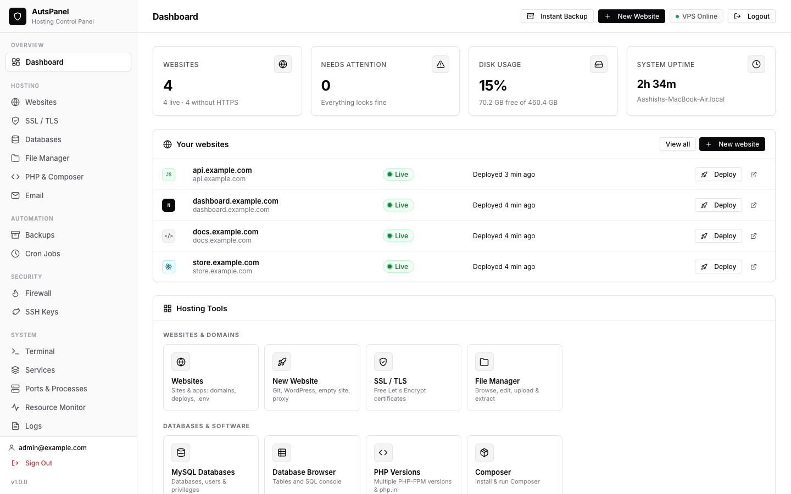

Install AutsPanel on Ubuntu or Debian
AutsPanel installs with one script on a fresh server. It takes about five minutes and leaves you with a dashboard on port 9090.
Requirements
- A VPS with Ubuntu 20.04, 22.04 or 24.04 LTS, or Debian — from any provider (Hetzner, Contabo, DigitalOcean, Linode, Vultr, AWS…).
- Root access over SSH. AutsPanel runs as root because it manages nginx, PHP, databases and the firewall.
- At least 1 GB RAM. Use 2 GB or more if you build Node.js apps on the server or host email.
- Port 9090 reachable for the first login (and 80/443 for websites). If your provider has a cloud firewall, allow these there too.
Use a fresh server. Other control panels (cPanel, Plesk, aaPanel…) manage the same nginx, PHP and database files and would conflict with AutsPanel.
1. Install
Connect to the server and clone the repository to /opt/backup-vps:
ssh root@YOUR_SERVER_IP
git clone https://github.com/auts-tech/backup-vps.git /opt/backup-vps
cd /opt/backup-vps
cp .env.example .env
nano .envIn .env, set the admin login and a random session secret:
ADMIN_EMAIL=you@example.com
ADMIN_PASSWORD=choose-a-long-password
PORT=9090
HOST=0.0.0.0
# openssl rand -hex 32
SESSION_SECRET=paste-a-random-64-character-stringChange ADMIN_PASSWORD before running the installer — the example value changeme123 is public. The panel has a root terminal, so treat this password like the root password.
Save the file (Ctrl+O, Enter, Ctrl+X) and run the installer:
chmod 600 .env
sudo bash setup.shsetup.sh installs Node.js 20, git, rclone, msmtp, cron, zip/unzip and build tools, installs the panel's dependencies, enables log rotation, and creates the vps-backup-manager systemd service so the panel starts at boot. It is safe to run again later.
The installer sets the server's time zone to Europe/London. To use your own, run for example timedatectl set-timezone Asia/Kathmandu afterwards — backup schedules and logs follow the server time.
nginx, certbot, PHP, MariaDB and PM2 are not installed up front: the panel installs each one the first time a website needs it.
2. Log in
Open http://YOUR_SERVER_IP:9090 and sign in with the email and password from .env. After 10 failed attempts from one IP, logins are blocked for 15 minutes.

If you change .env later, restart the panel with systemctl restart vps-backup-manager.
3. Put the panel behind HTTPS
The panel includes a root terminal and file manager, so it should not stay on plain HTTP. Use the panel itself to give it a domain and a certificate:
- Create a DNS
Arecord such aspanel.example.compointing to the server. - Go to SSL / TLS, enter your email and click Install certbot.
- Go to Websites → New Website → Reverse proxy, enter port
9090and the domainpanel.example.com, tick Enable HTTPS and click Create website. The proxy supports the live logs and the terminal WebSocket. - Open
https://panel.example.comand log in. - Stop exposing port 9090:
nano /opt/backup-vps/.env # set HOST=127.0.0.1
sudo systemctl restart vps-backup-manager4. Turn on the firewall
Open Security → Firewall and click Turn on. AutsPanel first allows SSH and the way you currently reach the panel (port 9090, or 80/443 when it is behind the proxy), so you can't lock yourself out. Add rules for anything else you need, such as mail ports.
Updating
When a new version is available the panel shows an Update available notice with the list of changes. Update now fast-forwards the code, keeps your settings and websites, installs changed dependencies, checks every server file and rolls back automatically if anything fails, then restarts.
From SSH you can do the same:
cd /opt/backup-vps
git pull
sudo bash setup.shService commands
| Task | Command |
|---|---|
| Status | systemctl status vps-backup-manager |
| Restart | systemctl restart vps-backup-manager |
| Panel logs | journalctl -u vps-backup-manager -f |
| Job and backup log | tail -f /var/log/vps-backup-manager.log |
| Scheduled task output | tail -f /var/log/vps-panel-cron.log |
Frequently asked questions
How long does the installation take?
About five minutes on a typical VPS. Most of the time is spent installing Node.js and system packages.
Can I install AutsPanel on a server that already has websites?
Yes, if they use nginx. Existing nginx sites appear under “Other nginx sites” on the Websites page and can be managed with one click. Don't install it next to another control panel.
Which port does AutsPanel use?
Port 9090 by default (PORT in .env). Put it behind HTTPS with a reverse proxy and set HOST=127.0.0.1 to stop exposing it.